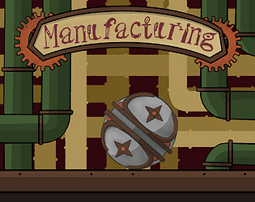

Manufacturing
Manufacturing es un juego en el que tendrás que usar tu ingenio para ir pasando de nivel. Estás en una fábrica y tendrás que conseguir terminar tu jornada de trabajo entre cables, engranajes y otras maquinarias. ¿Serás capaz de llegar al final? ¿O te acabarán sustituyendo por un robot?
Jugar